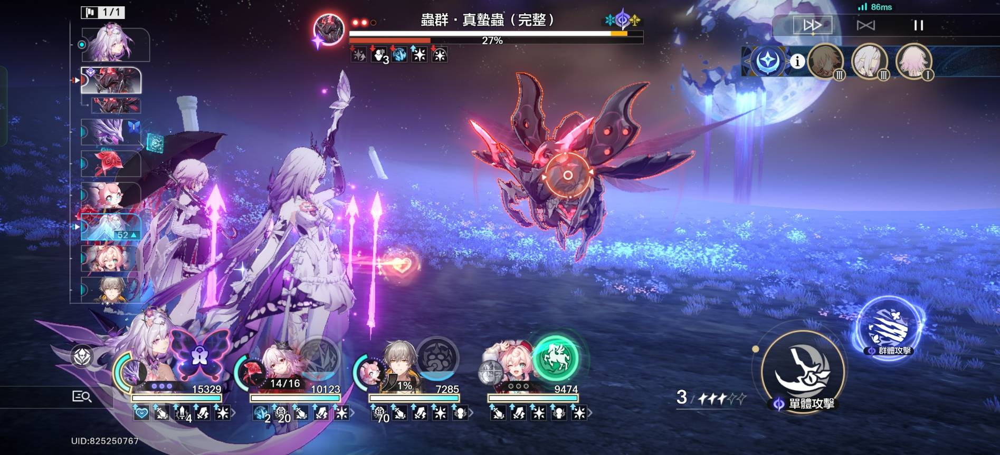
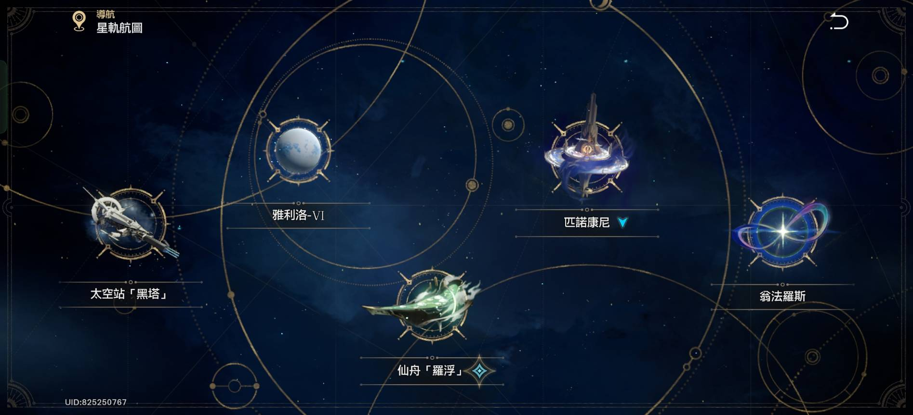
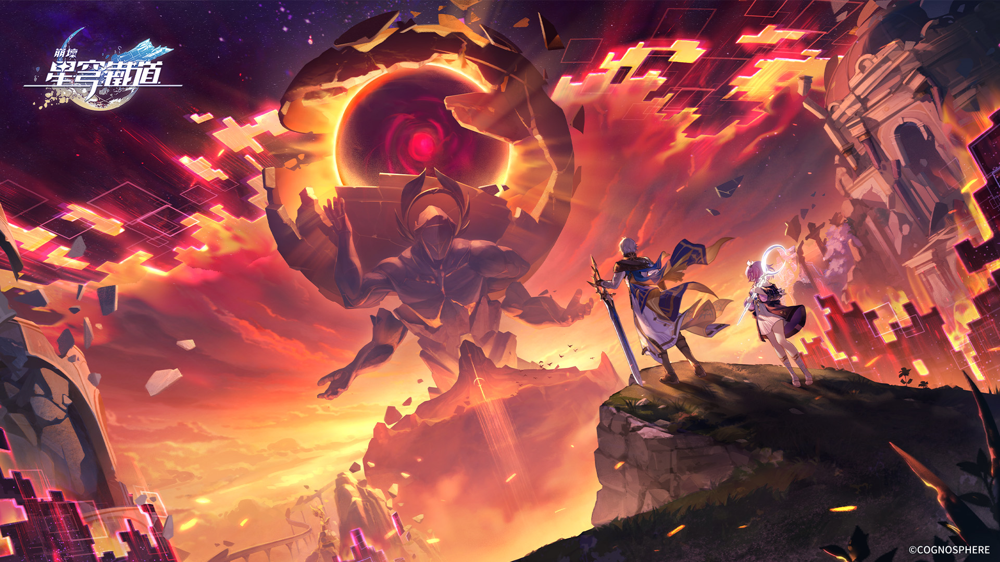
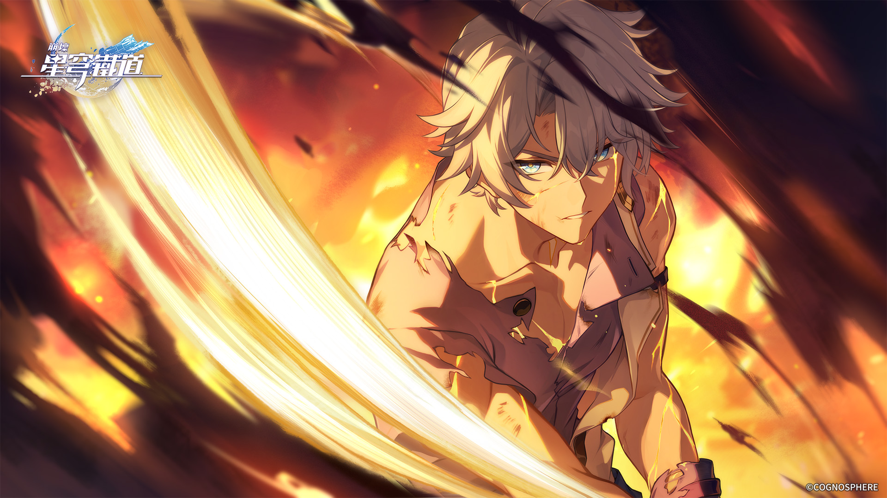
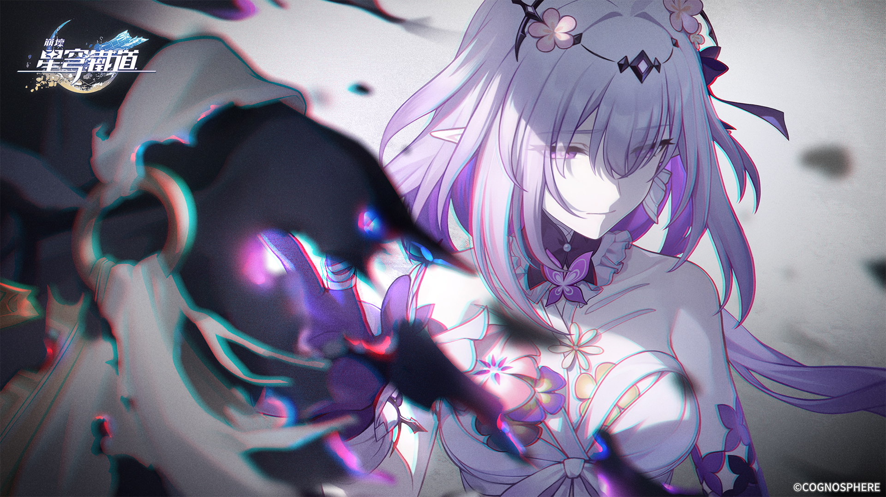
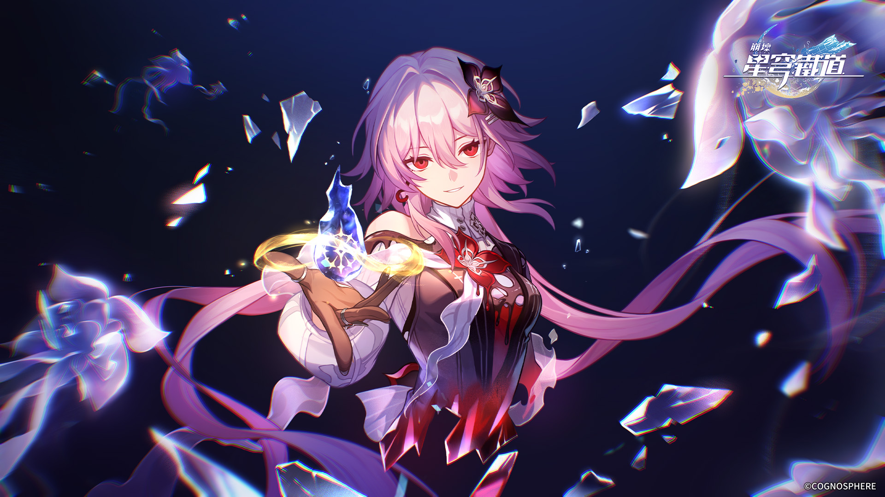

This is a link
This is a link
經典的回合制對戰
有趣的銀河冒險
精緻的動畫與音樂
高質量的劇情與美術圖
   被持續七百年的寒潮覆蓋的星球，雅利洛-Ⅵ。是開拓者加入星穹列車後，列車的首站。貝洛伯格是這座星球上唯一留存至今的城邦。
由六艘「仙舟」飛船組成的聯盟，而羅浮仙舟是龐大的星際飛船聯合體「仙舟聯盟」中的一艘旗艦
以夢境聞名的星球，「夢想之地」匹諾康尼。原是星際和平公司管理的邊陲監獄，後犯人們奮起反抗，在「同諧」星神的庇佑下，將監獄改造為酒店，匹諾康尼從此成為了「盛會之星」。
三重命途交匯、未被「開拓」過的星球，翁法羅斯。從外觀上看，形如莫比烏斯帶。而在翁法羅斯內，一隻由黃金裔組成的小隊正在為「逐火之旅」而奮鬥。